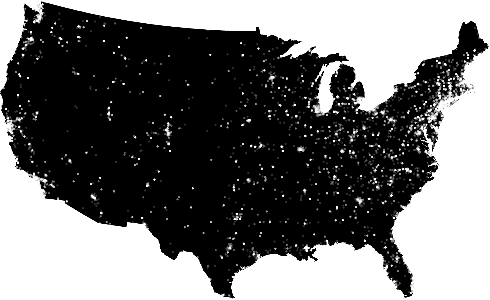
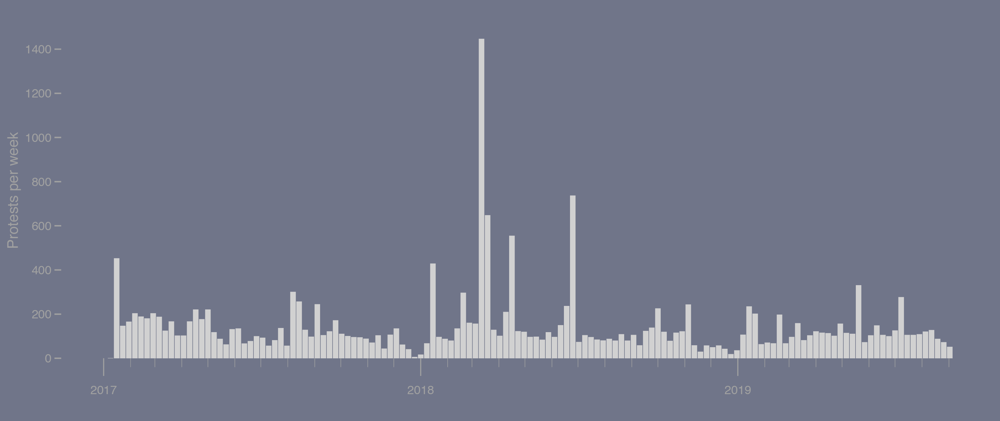
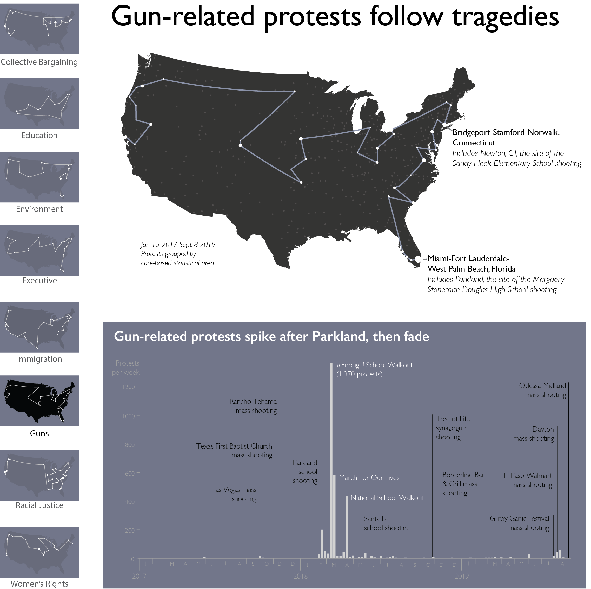
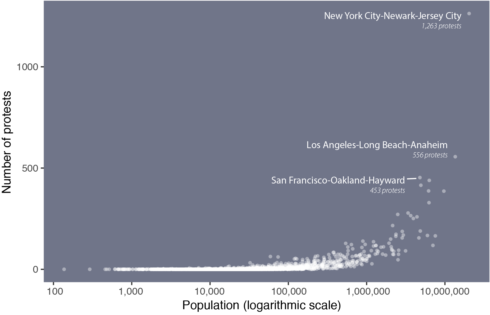
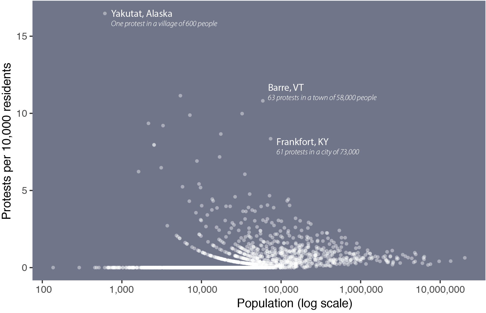
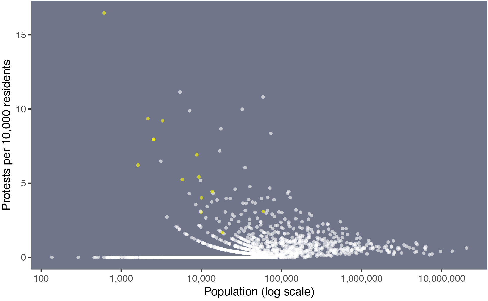
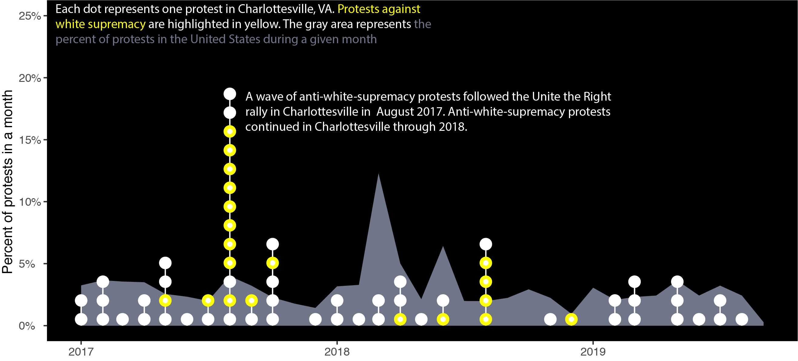
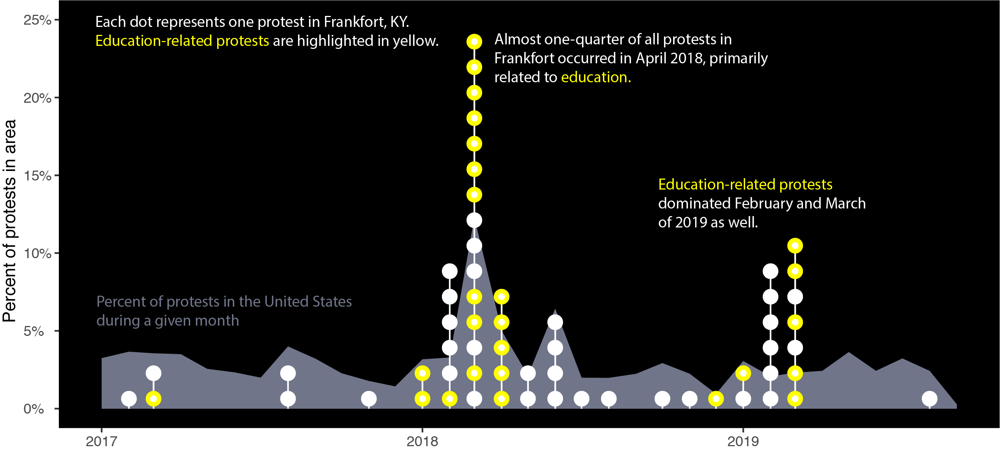
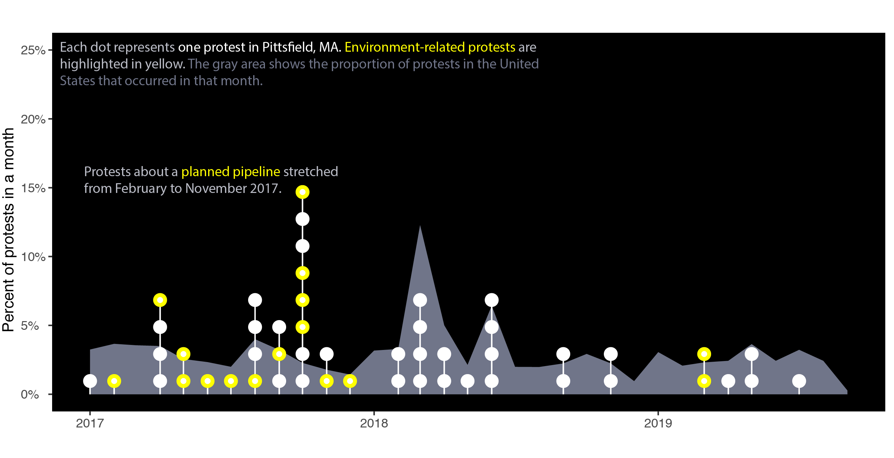
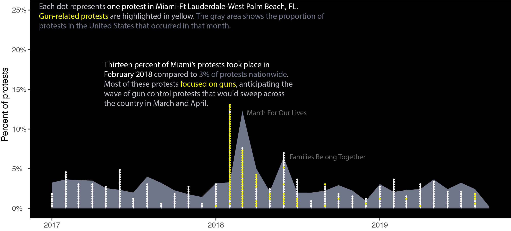

Constellations of Protest
Americans have walked out, sat in, and marched in more than 20,000 protests since January 15, 2017. Some protests were part of mass movements; other protests were fundamentally local. Watch protests from January 2017 to September 2019 in the map below.
 Protests about different topics took different forms across the country. In the maps below, places that tend to protest about specific issues are highlighted and connected in constellations.
Movements like March For Our Lives, Families Belong Together, and the Women's March dominate national analysis of protest.
However, many local movements disappear when the country is considered as a whole. Of course, places with more people tend to have more protests.
Look at protest rates per 10,000 residents, though, and some outliers begin to emerge.
Many places with high rates of protest are in Alaska, where protests against state governor Mike Dunleavy reached even the smallest villages. Yukatat, a tiny fishing village of 600 people, has the highest rate of protests per resident because of a rally against Governor Dunleavy.
Sometimes, protest comes from outside. In June 2018, a restaurant in Lexington, Virginia refused to serve then-Press Secretary Sarah Huckabee Sanders. For the next few weeks, protests and counter-protests roiled a town of about 7,000 residents.
The effects of these protests can linger. In Charlottesville, Virginia, anti-white-supremacy protests continued long after the Unite the Right rally in 2017.
State capitals tend to draw protests from across the state. For instance, Frankfort, Kentucky was the site of dozens of protests against budget cuts to education.
Sometimes, though, protests are about entirely local issues. Pittsfield, Massachusetts protested a pipeline throughout 2017.
And sometimes, the local becomes national. In South Florida, protests in favor of gun control errupted after the Parkland school shooting in February 2018, setting the stage for March For Our Lives and a nationwide wave of school walkouts in March and April.
